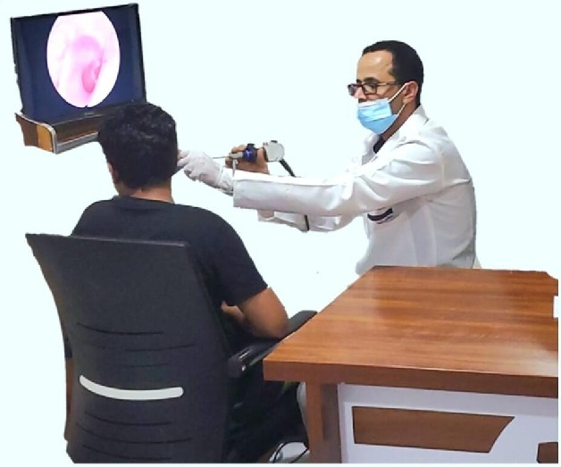

أبرز أدوات تشخيصنا
- مناظير الأنف والجيوب الأنفية لتشخيص مشاكل الانسداد والالتهابات.
- تنظير الحنجرة والبلعوم لتقييم الصوت وصعوبة البلع.
- تخطيط وقياس السمع للأطفال والكبار بأجهزة دقيقة.
أهم الأمراض التي نعالجها
- التهابات الجيوب الأنفية والأذن الوسطى
- علاج التهابات الأذن الوسطى وتنظيف الأذن بأمان
- مشاكل السمع والدوخة والصداع
- الشخير واضطرابات التنفس
- بحة الصوت وتحسس الأنف والتهابات الحلق
- طنين الأذن، ارتجاع المريء، أمراض الرقبة والغدد الليمفاوية
أهم العمليات التي نجريها
- ترقيع طبلة الأذن بالمنظار
- زراعة أنابيب تهوية الأذن بالمنظار
- كي رعاف الأنف بالمنظار
- تعديل الحاجز الأنفي بالمنظار
- جراحة الجيوب الأنفية والمناظير المتقدمة
- استخراج الأجسام الغريبة بالمنظار
- تجميل الأنف، إصلاح إصابات الوجه والرقبة
- استئصال اللوزتين واللحميات الأنفية والبلعومية
- فتح الرغامي، شد سقف الحلق، وفك التصاقات اللسان